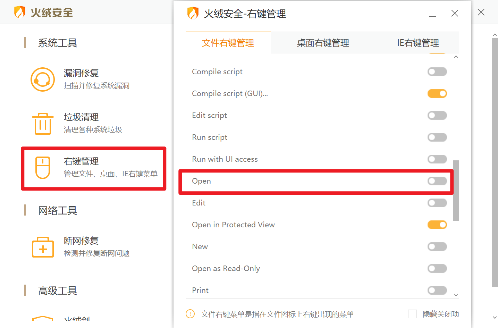

「记」类型的区分 & 2023 年 10 月 2 日杂记
居然有半个月没产出新博文了，打破了记录，真是罪过罪过。虽然并不是啥也没做——把值得上传的旧文整理了一下上传了、修改了点博文……但还是得写点新东西。
记
目前。我的博文大致出现了四种「记」：「笔记」「杂记」「随记」和「摆记」。是时候对它们进行区分了。
当然未来可能出现更多形式，因此博文形式也不拘泥于以下几种。
笔记
顾名思义。「笔记」的源 markdown 文件名一般以其主题的英文名命名，主要内容大致与「数学」「物理」及「计算机」等有关，大概能反映我的学习状况等。
杂记
「杂记」和「随记」我本是不知道该如何区分的，但鉴于两个名词在旧文新文中都有出现，还是有必要区分的。
「杂记」内容比较杂乱，大概能分成多个部分，每个部分有一个比较统一的主题，不同部分关联弱甚至无关联。
也就是说，「杂记」可以看作是很多个思考的拼凑，只不过每个思考不足以形成一篇博文，因此将它们进行堆砌。
不过「杂记」里面的部分应该几乎和学习无关，否则放在「笔记」会更为合理。
由于杂记有不同的主题，名字就不好以其一进行命名。当然，如果杂记有明确的目的，可以以某一主题进行命名，如「2023-08-26 杂记 & 南京大学邮箱设置」的名称就是 nju-email（不过其实这个不应该算杂记，应该算随记，但我也就不改动了）。否则的话，就直接叫 zaji，如果一个月有多次杂记的话就加上数字进行区分，如 zaji-1。
原本杂记叫 jotting，但 jotting 是 "something short such as an address somewhere"，加上摆记都叫 baiji 了，也就不那么洋气了，拼音便拼音。
随记
「随记」内容也比较杂乱。
我觉得可以将「随记」分为两类：
- 闲聊类的，想到啥说啥，想到啥写啥。例如上面的伪杂记，其实应该算随记
- 大致有一个主题，只不过内容和思想都比较零散，即「形散且神散」，如「2022 年 9 月 25 日胡思乱想」
名称呢，大致与杂记相同：比较散乱的就叫 suiji，有个主题的就以主题命名。上面那个随记叫 woolgather，但其实大致讲的是我对个人空间的回忆，所以完全可以取个具体的名称。但出于尊重当时的我的意志（标题就叫「胡思乱想」），最后还是以「胡思乱想」进行命名。
摆记
「摆记」基本上指的是高三下学期所写的记录自己萎靡不振的生活的类似周记的东西。目前只录入成电子版两篇（还是两篇，因为这两周没去录）。
从内容上看，「摆记」应该是属于「随记」这一范畴的。
不过「摆记」未来大概是不会出现了，毕竟大学时光比较自由，我那叫自我发现、探索未知，怎么能叫摆烂呢？
再加上「摆记」属于私博，不对外公开，因此「摆记」之名号可以说是名存实亡。
而从今年 3 月 5 日到 5 月 29 日的 13 篇周记性摆记 + 数篇主题性摆记，将会是为数不多的摆记珍品。
摆记名称目前按顺序编号进行命名，如 baiji-1，主题性摆记目前还没到录入阶段，估计要么是像上面一样按主题命名，要么就是前面加上 baiji- 前缀。
OCRC
为了录入摆记，起初我选择了语音输入，试过了 Windows、讯飞和华为（荣耀）。似乎是 Windows 准确率比较高？我也不记得了。但三者标点都很差劲，我为了和原文保持一致，连标点、错字都要求相同。而且 Windows 还有特别离谱的屏蔽词设置，查了一下不是大陆特供，而且没法关闭。奇葩的是「靠」是屏蔽词而「傻」不是。
于是我就打算用 OCRC 进行识别了。然而 OCRC 只支持截图 OCR，因此我就开了个 2.2.0 Develop 的 PR 加入这个功能。
本来计划是用命令行实现这个操作的，但最终因 AutoHotkey 与命令行交互较差，放弃了。改为在 Menu 设置两个按钮分别进行文件和文件夹的识别。具体的等我找时间更新一下文档。
操作过程中我发现「手写文字识别」识别几张图时返回结果比较诡异，把精度调高一点（转义回来图片清晰度肉眼没啥差别），结果大概是一行奇怪了英文，左右含义不明，中间出现两个单词是图片中有的，特别神奇。我以为是我的代码出问题了，排查了蛮久，但都找不出端倪。
而且还是连着几张图片有问题，但是前面和后面的图片都没问题。而且换成高精度也没问题了，但即使换一个 API Key 和 Secret 仍然有问题。
于是我去官网调用，是正常结果。不过官网是直接上传一个图片，无需设置精度，得到的 Base64 与我不同。我测试了一下，我的 Base64 在 100 精度时比原图还要大，原因不明。然后官网用我的 Base64 会出错，好像说啥格式问题，加上前缀就不会了，但似乎会超时？然后我记得似乎后面就也得到跟我一模一样的诡异结果了（几次结果均相同），好像连直接上传也结果异常了。
注意
过了蛮久了，我也记不清了，因此上面特别写了约数词的都可能有记忆偏差。
然后我刚刚测试了一下问题图片，正常返回了结果。所以我倾向是官方的 API 出问题了。
CPL
课程
老师感觉蛮不错的，但讲课还是照本宣科，内容讲得比课本少，而且进度也比较慢。
于是我打算每周五下载蚂蚁老师的网课，周二上课时看，剩余时间自己看书、玩或写作业。
蚂蚁老师倒不是按课本讲的，他还讲了蛮多拓展内容，如 GitHub 仓库创建，还讲了 .gitignore、LICENSE 选择、CMakeLists 编写等。很难想象有三节课时的我们讲得比两节课时的软院还慢。再加上蚂蚁老师风评很好，以及我平时用 Vim 操作，可以帮我巩固一下我不太熟悉的部分，我决定主要跟着软院学了。
OJ
OJ 第一次作业蛮简单的，胆战心惊地提交总感觉自己少考虑了什么（因为题目部分有些地方我不知道在说些什么），但好在都一次 AC 了。
为了 OJ 专门建了个私密仓库 CPL-Homework，大致架构如下：
1 | CPL |
没错，我既在 CLion 写，又在 VSCode 写。其实还在 Vim 写。
主要应该是用 CLion，IDE 肯定还是强的。VSCode 大概就是有时候只是随便写点东西，去开 CLion 太慢了，这样时就用 VSCode。而虽然两个我都装了 Vim 插件，但支持还是不够好，比如一个很好用的插件 vim-visual-multi 就没有支持，以及要进行对齐等格式化时，还是用 Vim 比较方便。同时要迅速查看一个文件时也是 Vim 快捷一些。
对 Vim 的支持应该是 JetBrains 的更好，我给 easymotion 的映射 JetBrains 都明白，而 VSCode 还用的是默认的。
但还是有一些缺憾的，比如有个映射 0，可以让其光标在行首和行首非空白字符跳转，这个在 VSCode 和 JetBrains 都无法生效。不过也就是多按个 w 的事，按键数没少，只是不连贯罢了。
不过在用 JetBrains 的时发现 easymotion 会打出 symotion-s) 类似的字符，查找相关 issue 知道是 noremap 的问题。因为我基本不用递归映射，就习惯性地用 noremap 了，不过这里用 <Plug> 倒也不需要强调不递归，因此删掉 nore 就解决了。
1 | cmake_minimum_required(VERSION 3.26) |
CLion 项目如果要有多个 main，要先给子文件夹加 add_subdirectory，然后子目录还要创建 CMakeLists，再一个个 add_executable。实在是麻烦，于是我参考如何在 clion 运行多个 main 函数写了上面的 CMakeLists，方便多了，目前也没什么错误。
别的东西明日再补充吧。
Anki
惭愧，已经四个月没有制卡了。
不过我还是有关注 Anki 的更新动态的，例如 AnkiDroid 2.17 将引入「自定义学习」、AnkiDroid 后端大更新、Anki 引入 FSRS 等。
目前看来，Anki 23.10 和 AnkiDroid 2.17 将会是 Anki 历史上极为重要的版本。
本来计划国庆制点英语卡，不过拖延症似乎没有改善……
翻译
但不意味着最近我除了刷刷 GitHub 外就没对 Anki 做过什么了。其实我对 Anki 贡献了部分翻译。
其实早在今年五月我就对 Anki 有贡献翻译了。起初是因为 AnkiDroid 一些标点格式让我很难受，然后还有一些与 Anki 不统一的翻译，因此我了解 AnkiDroid 翻译在 Crowdin 后，就去提交了部分翻译。
然后又注册了个 Pontoon 账号，提交 core desktop 和 mobile 的翻译。
不过我的翻译主要是对格式的修正：如全半角标点，数字字母与汉字间的空格等等，比较少进行翻译的修正，毕竟我英语比较差。
五月初，又 fork 了 manual 的 GitHub 仓库，因为原中文文档太旧了，而且「不像干正事的」。
主要形式是机翻加手工校对和格式修正，我还为一些截图做了本土化制作。非常累人，没翻译几篇就累死我了。加上翻译后我很难查找原文档的变化，以及我也即将要高考了，最终这个项目就搁置了。
大学有机会也许能重启这个项目？不过还是得找到一个方法，查看原文档的更改。难不成就比较当时和最新的两个 commits，再逐一修正？我也想过注释每一段原文，每一段下面加上中文翻译，不知道能否方便一点看出 diff，且不说这种方式我不知道可行与否，一旦遇到大规模改动还是束手无策。
然后这两周我又去贡献翻译了，主要是闲着没事干又不想搞学校的事。修正了许多格式，现在格式问题应该大部分解决了。还补了一些有关 FSRS 的翻译。
原本 FSRS 的翻译我是想等其作者翻译的，但最终还是迫不及待抢先翻译了。不过我不了解 FSRS，因此只能参考作者的文章及繁中，加上自己的理解进行翻译，有些地方翻译得不伦不类。
例如作者的文章写道「该模型考虑了影响记忆的三个变量：难度（difficulty），稳定性（stability）和可提取性（retrievability）」，作者翻译的文章写道「如果你是 Piotr Wozniak 的话，可能会说成是『保留率（Retention）』或『可提取性（Retrievability）』。不过在他的术语中，『保留率』和『可提取性』又不是一回事……唉，要给这些概念起个好名字真不容易」。因此我将 Retention 翻译为「记忆保留率」，将 Retrievability 翻译为「记忆可提取性」，但总感觉很古怪。而繁中则均翻译为「留存率」。
最近的翻译指的都是 Pontoon 的翻译，五月后我就没有再在 Crowdin 贡献翻译了。原因有如下几点：
- Crowdin 的翻译只要注册个号就能翻译了，因此管理比较严格，你的翻译要被较多人接受才能提交。但是那个项目又不怎么活跃，我新提交的翻译等后面的人看到，黄花菜都凉了。而 Pontoon 上我直接就有较高的权限，能接受自己的翻译，否决别人的翻译。
- Crowdin 上有些翻译已经打上绿勾了，无法更改。要更改似乎要联系权限比较高的人？实在是麻烦。
- Crowdin 网络连接差，我等好久都加载不出来。而 Pontoon 就快多了。
- 大学接触电脑还是方便得多，主力 Desktop 也没啥问题，没动力翻译。
如果你看我的 Stars，会看到 3 个仓库：ankimobile-ftl, anki-desktop-ftl 和 anki-core-i18n。
我是一个不怎么 star 的人，不然也不会只有这三个仓库的。但我 star 也不是因为怎的，而是因为我想要 contribution 显示在 heat map 上。以下是 GitHub 文档原文：
In addition, at least one of the following must be true:
- You are a collaborator on the repository or are a member of the organization that owns the repository.
- You have forked the repository.
- You have opened a pull request or issue in the repository.
- You have starred the repository.
显然我不是合作者或组织成员；我也不想 fork 一个仓库又不对它贡献；要开个 PR 还是得 fork。所以最终还是选择了 star 这种方式。
我还是很爱慕虚荣的嘛😆。
Markdown-KaTeX 插件
之前为了在 Anki 使用 markdown，安装了
Markdown and KaTeX Support 插件。后面由于我主要使用的是这个插件的模板功能，就只保留了模板，并按自己的需求进行了部分修改。
不过有个功能，Cloze 样式更改，我却一直无法实现，毕竟我对 HTML & CSS & JavaScript 知之甚少。
而最近有个人为插件提交了一个 PR，似乎作出了很多改进，也加入了这个功能。不过这个 PR 没有被接受，倒不是因为有什么不好的地方，估计是作者无心维护插件。以下是作者原话：
Sorry for taking so long. I decided against merging your Pull Request because I'm afraid that if I do so, I'll destroy all customization people did to their local version of this Addon.
If it's okay for you I'd mark this Addon as deprecated and Link your Version as the one that is being maintained?
Totally understand if you don't have time to maintain this but if you do I'd just change the Addon on Ankiweb to "Markdown and KaTeX Support (depricated)" and link to yours. You can change the title to "Markdown and KaTeX Support" then.
所以也许我也应该找个时间更新一下我的模板，并且传到 GitHub 上？
Snippets
重启了 Matrix Snippets 计划，同时更改了目标，转向做偏静态的模板。动态且智能的就用 sillybun 的。争取今日完成，然后开始写作业。
为了完成这个项目，我完整地读了一遍 UltiSnips 的文档，当然还是有些地方不明白，不过也有一些收获。
大部分实现我都有思路了，唯一还没什么头绪的大概是智能省略号，我觉得能实现这个的话还是很方便的。
完成后试着补记一下微积分和线代的笔记，测试一下可用性。
Copilot
Microsoft Copilot
更新完我就禁用了。没梯子用不了，放在任务栏也是碍眼，就只能禁用了。
GitHub Copilot
好好好，太好用了。
文档
写文档类的东西，比如 OCRC 的设置 ToolTip、CHANGELOG 什么的特别好用。
而且它很聪明啊，各种方面，具体例子记不清了，就举一个不是那么明显的例子吧。
比如我写 CHANGELOG 时，我打了个 A，它提示我 Add，我采纳了它，但是加了个 ed，然后下面它就会提示我 Changed 而不是 Change 了。
然后我现在 CHANGELOG 也不自己写英文了，都是先用中文写，然后让它翻译。
代码
写 OJ 时开着，结果一下子就把过程给我打出来了。好在题目比较简单，它的过程跟我想得一模一样，不然就算是作弊了。以后做 OJ 还是关掉比较好。
写简单、重复的代码比较方便。写稍微复杂一点的代码可能就有偏差了。不过让我有点惊喜的是，昨天（10 月 2 日）写 Matrix Snippets 时，我把零矩阵、单位矩阵、对角矩阵、反对角矩阵等写好了，然后下一个矩阵样式关键词是 t，它直接就把上三角矩阵写好了。我要的确实是上三角矩阵，然而我根本没写注释，也没有在任何一个地方标注我要弄一个上三角矩阵。
聊天
一开始我看 VSCode 插件 Copilot Chat 说要报名什么 Next 获取 Copilot X 什么的，我申请了不过现在似乎还在 waitlist。但是我直接启用也能用聊天功能。
不过实际效果感觉不太行。我让它讲讲 C 语言基础知识，讲到函数时回复中途给隐藏了，试了几次都如此，我还没让它做什么呢。
然后还是一如既往喜欢扯淡，我让它解释一下文件中一个 Python 函数，它扯出来一个原文中不存在，毫不相关的函数。
当然也可能是因为我想让它用中文解释，也许用英文，直接用命令 /explain 什么的会准确一些？（不过上面那个例子，英文也是扯淡，因为我看的中文就是让它翻译过来的）
当然总的来说，肯定是大有裨益的，效率提升是肯定的。
Vim
一开始我以为只有 Neovim 才能用 Copilot（GitHub Copilot 主页只写了 Visual Studio, Neovim, VS Code 和 JetBrains IDEs），结果一去 Copilot.vim 一看发现 Vim 也能用，于是赶紧安装了。
不过即使 Vim 能用，Description 写的还是「Neovim plugin for GitHub Copilot」，只在 README 写了两句：
Copilot.vim is a Vim/Neovim plugin for GitHub Copilot.
…
Install Neovim or the latest patch of Vim (9.0.0185 or newer).
这下 VSCode, JetBrains, Vim 都用上 Copilot 了。
WSL
代理
最近好像是在知乎搜索 WSL2 时发现一篇文章「WSL2 的 2.0 更新彻底解决网络问题」，好好好，这下就能让 WSL 用本机的代理了，同时还能关闭 WSL 后自动释放内存，不用手动 wsl --shutdown 了。
使用方法为在 .wslconfig 中加入以下内容：
1 | [experimental] |
官方文档在这里。（这个链接是 Copilot 写的，我只是加了个标题锚点）
要加上 [experimental] 块，一开始没注意，结果一直不生效。
除了以上设置，之前我还加入了以下设置以限制 WSL 的内存使用：
1 | [wsl2] |
DevSideCar
然后 DevSideCar 还需要额外导入证书，参考两个 issue 建议：在 ReadMe 中添加 WSL 中的使用方法和 Linux安装证书失败的避坑，导入了证书就成功了。
SSH
然后导入 Windows 的 ssh key 时遇到了「Permission are too open」的问题，参考 SSH key permissions are too open error 解决。（这个链接也是 Copilot 写的，惊了，跟我正在看的一致，只是标题弄错了。不过这也说明这个是最出名的解决方案）
即设置权限：
chmod 600 ~/.ssh/id_rsa |
就好了。
为何用 WSL
用 WSL 有以下几点原因：
- 用 Docker 封印 EasyConnect
- 学习 Linux
然而现在我还不会 bash 等。找机会学习一下吧。
火绒之锅
这是 10 月 5 日写的，只不过单独成篇太短了点，就合并在一块儿了。
今天写英语作业，用 Word 写一篇英语作文。自用 markdown 撰文以来，我就很少用 Word 了，也就开学前有个个人小传用了一下。然后我双击了 Word，弹出了下面这个窗口：
好好好。之前已经出现过几次了，但毕竟我不常用，也就忍忍过去了。但我这次真恼火了，我已经按了「始终」好几次了，还试过右键选「打开方式」再来弄，还是不行，每次双击它还会跳出这个窗口。于是我忍无可忍，就去网上搜了一下。
你可能会说，这跟火绒有半毛钱关系吗？我也想不到，居然是火绒的锅（其实言重了）。
最终我在「win11每次打开word、excel都询问你要如何打开这个文件（即时勾选始终使用此应用打开也不行）？」找到了答案，即为将火绒「右键管理」的「Open」打开。

说是「火绒之锅」有点推卸责任，真正的原因其实是因为右键项目太多了，而我在不知道其含义的情况下就随意地关闭，导致了这个问题。这也给我上了一课，长了个记性。
而为什么这样命名标题呢？其实是因为前段时间我遇到了一个问题，迟迟无法解决，最终在意外的情况下发现是火绒的问题（当然实际上也还是我的问题）。详见 Cannot create task in Task Scheduler（渣英语）。
我记得当时同时还发现一个问题——PowerToys「启动时运行」不生效。然后有时又能生效，非常诡异。我也不知道怎么跟这个问题扯上关系，可能是因为我看任务计划程序发现了有启动它的任务。
随后我就转移了视线，开始观察 PowerToys 的问题。我多次尝试重启，并在刚开机快速进行某些操作（具体忘记了），然后发现有时能正常运行，甚至我原本的问题有时都能解决了。
最后我逐一进行排查，把问题锁定在了火绒身上，最终解决了问题。
也算是稀奇的经历🙃。